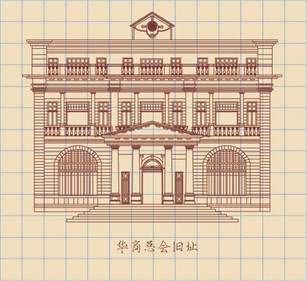

所在街区：江岸区汇通路18号 建筑风格：欧式风格 建造年代：1927年 现存情况：武汉市公用事业局

华商赛马公会建于1927年，立面体现了从古典主义向现代主义过渡的的特征。平面呈矩形，高三层。对称布局，主入口居中，以方柱支撑起上方的小阳台，构成了常见的门厅造型。底部基座用花岗石砌筑，中部墙体用灰砂砖砌筑，上方有一长一短两条挑檐。墙面开狭长的矩形窗，两扇或三扇组合排列。窗户之间利用刻槽的壁柱，强调竖向划分。上下层窗间饰有精致的浮雕，雕刻的图案是富有中国传统特色的牡丹花。建筑现为武汉市公用事业局，是武汉市二级优秀历史建筑。